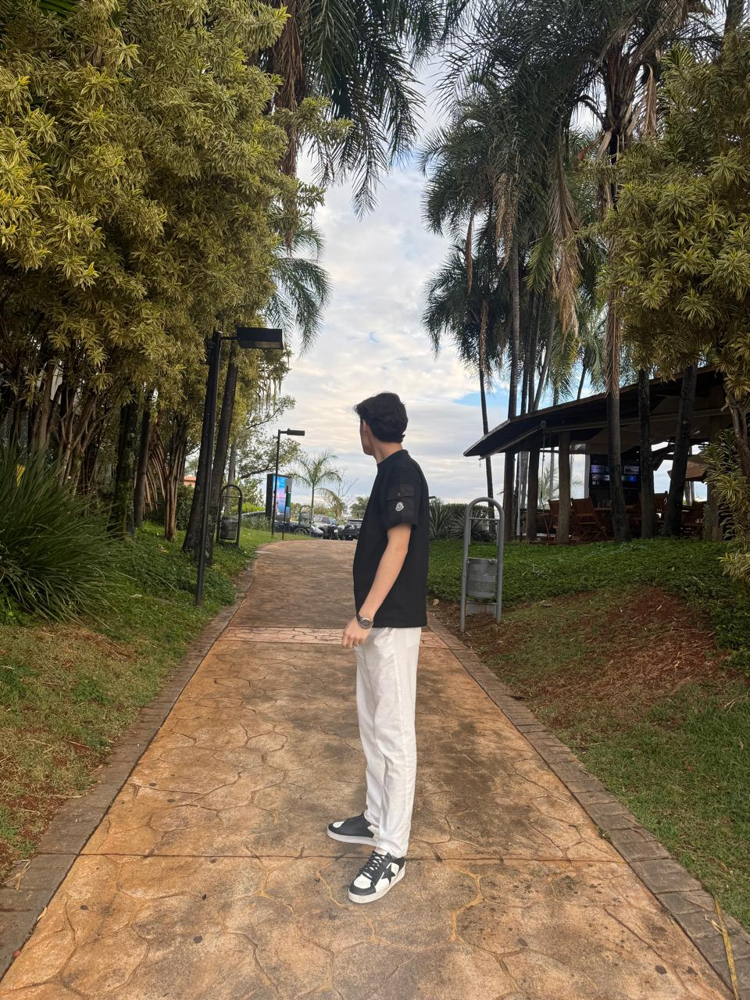

@gmsr_maison
Enviamos para
todo o Brasil
27 estados · com rastreio · do Oiapoque ao Chuí

Você envia a foto ou o nome da peça.
Selecionamos a peça a dedo com o nosso fornecedor.
Recebemos o vídeo da peça e conferimos cada detalhe.
Você recebe fotos e vídeos para aprovar.
Aprovou? A peça chega na sua casa, com rastreio.